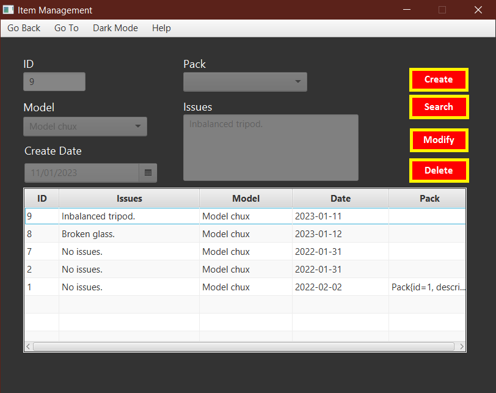
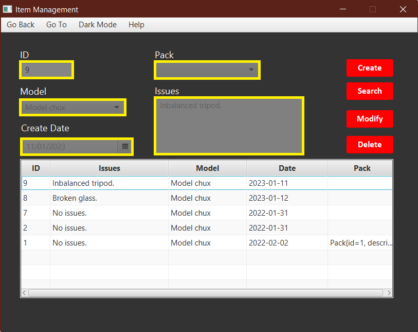
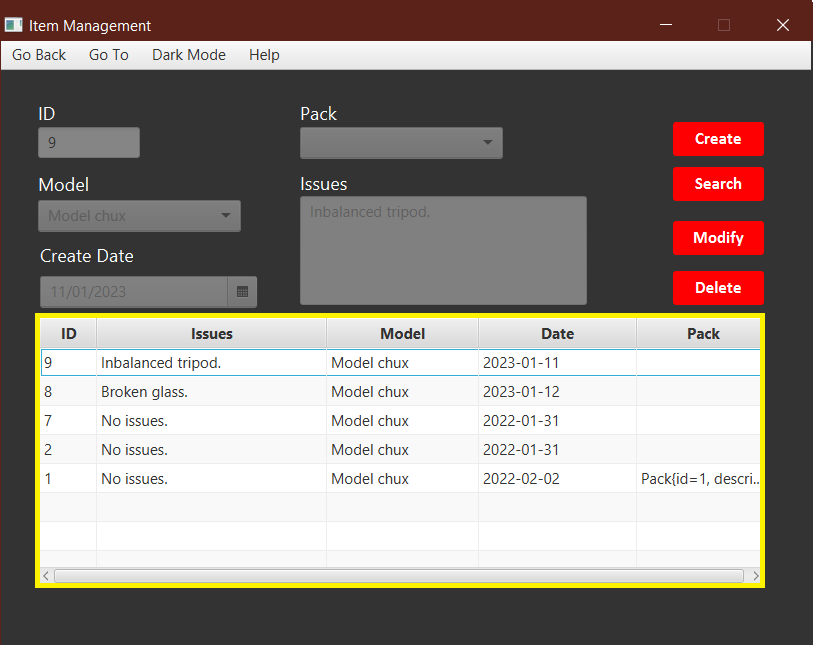
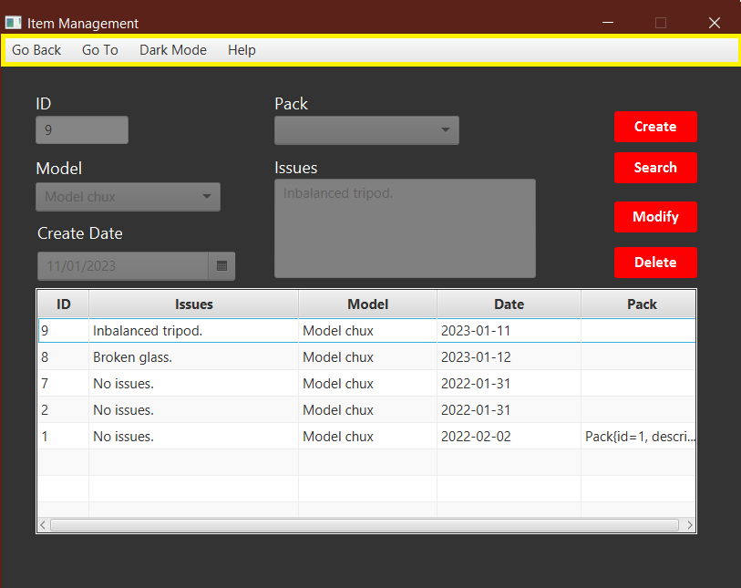
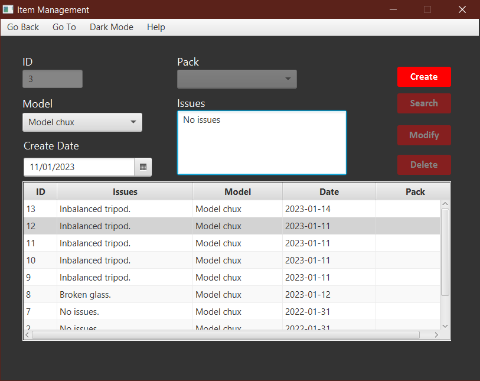
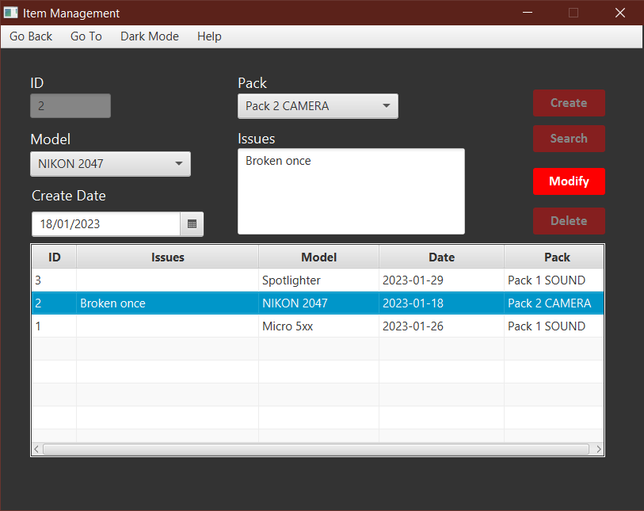
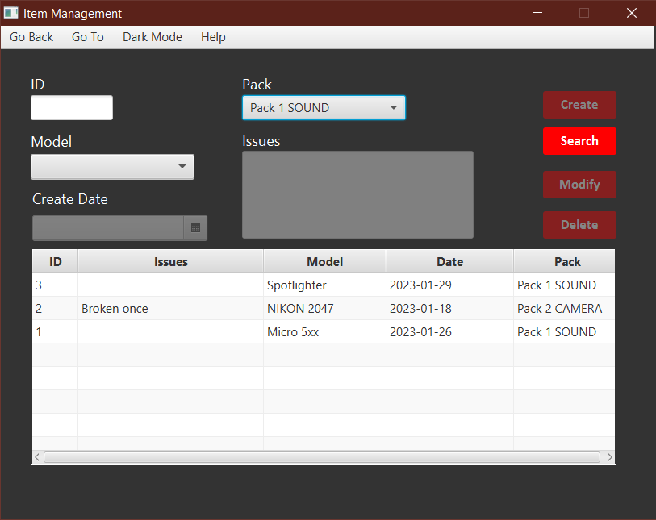
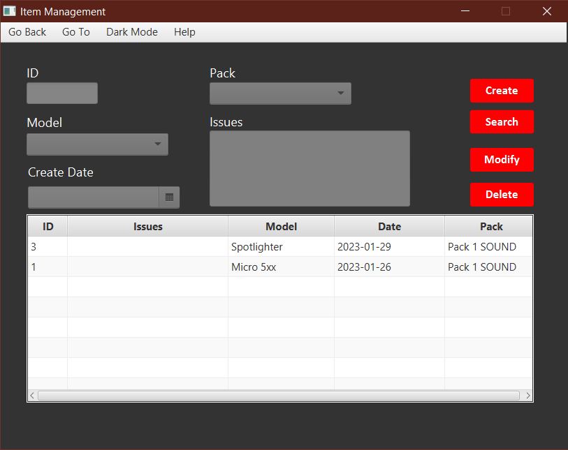
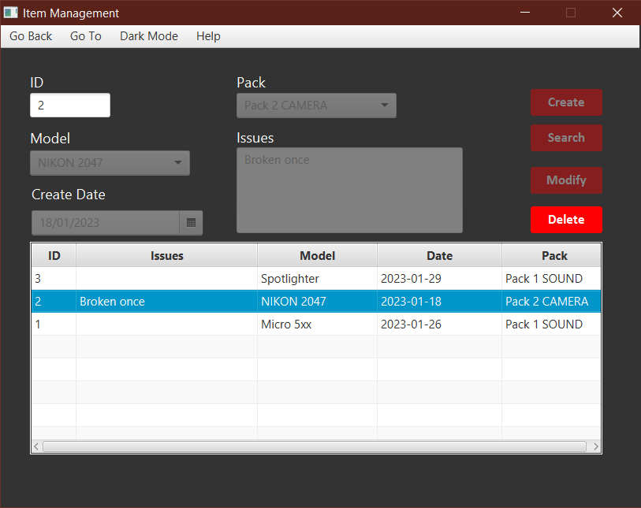

Welcome to the help tab for the Storio Item Management Window!
Here is how this window works:
- Window’s Composition
- In this window you can find four buttons on the right side of the window.


- A fully incorporated table in which data is displayed.

- And a horizontal menu with many options.

- General controls
- All buttons, fields, tables menus work by clicking on them. Whenever any of them are grayed out or do not react, it is because they cannot be used in the current state of the window, their state varies throughout the program's functioning.
- Clicking a button will make it toggle which will change the window functionality on different modes.
- Clicking on any row of the table will fill the information displayed on said table row into the fields displayed above the table.
- Clicking on the menu items (horizontal menu bar) will display a series of options that have different functionalities, from logging out to navigate through windows.
- Clicking on the buttons on the top right side will perform some actions:
- The first button will hide the window without closing it.
- The X button will close the program, not without asking the user first for confirmation.
- Pressing the escape key will perform the same action as the X button.
- Button state functioning
The buttons in this window work as a toggle. Meaning that clicking on them one will act differently from clicking it a second time. The buttons alternate between two states:
- When a button enabled state is entered, all the other buttons are disabled and all the needed fields are enabled.
- When a button disabled state is entered, all the other buttons will be enabled and all the fields will be disabled again.
3.1. Button specific functioning
- Create Enabled state: When clicked, the other buttons will be disabled, thus not being able to be interacted with. All the information fields, but the id(it generates automatically and it cannot be altered), will be enabled. You can select from the table to get a template for the information and then edit it.

- Create Disabled state: When clicked, the other buttons will be enabled and the program will try to create the item that was just specified. If it is successful, it will notify the user with a pop up window. Otherwise, it will notify the user that an error happened and why is the case.
- Modify Enabled state: When clicked, the other buttons will be disabled, thus not being able to be interacted with. All the information fields, but the id(it cannot be altered), will be enabled. You can select from the table to get the data of the information and then edit it.

- Modify Disabled state: When clicked, the other buttons will be enabled and the program will try to modify the item that was just selected. If it is successful, it will notify the user with a pop up window. Otherwise, it will notify the user that an error happened and why is the case.
- Find Enabled state: When clicked, the other buttons will be disabled, thus not being able to be interacted with. The id, Pack and Model fields will be enabled. You can search by any enabled criteria, though not by all of them at once.

- Find Disabled state: When clicked, the other buttons will be enabled and the program will try to find the items by the specified criteria. If it is successful, the retrieved data will be shown on the table. Otherwise, it will notify the user that an error happened and why is the case.

- Delete Enabled state: When clicked, the other buttons will be disabled, thus not being able to be interacted with. The id field will be enabled. You can select the element from the table directly as well.

- Delete Disabled state: When clicked, the other buttons will be enabled and the program will try to delete the item by the specified criteria. If it is successful, the entry will disappear from the table. Otherwise, it will notify the user that an error happened and why is the case.
- Dictionary
State: Meaning the four actions of the applications management:
- Create item.
- Modify item.
- Find item.
- Delete item.